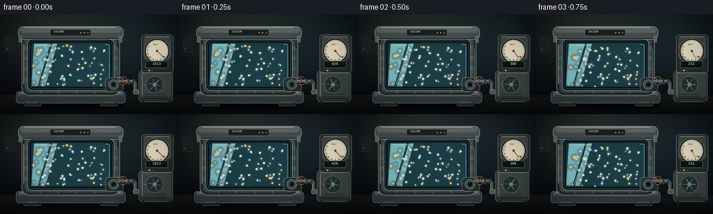
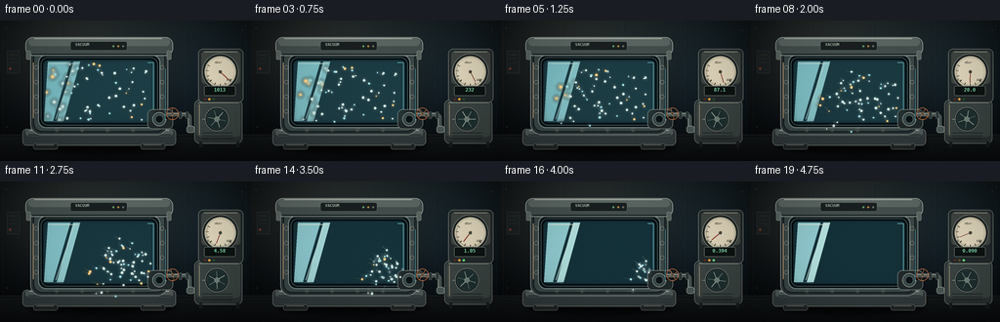
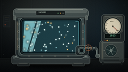
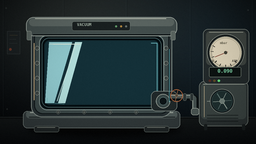
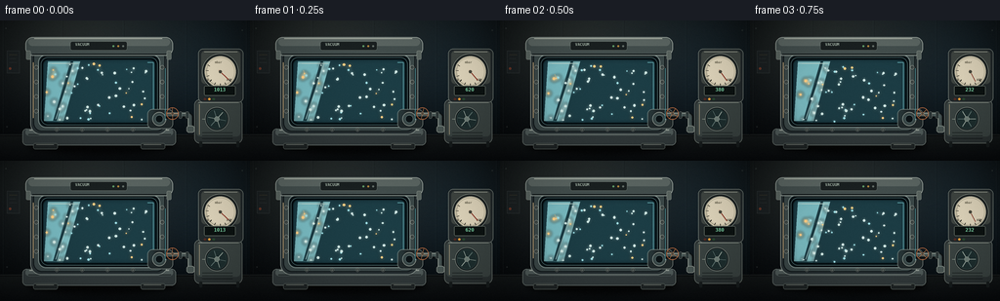
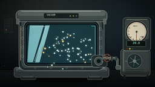
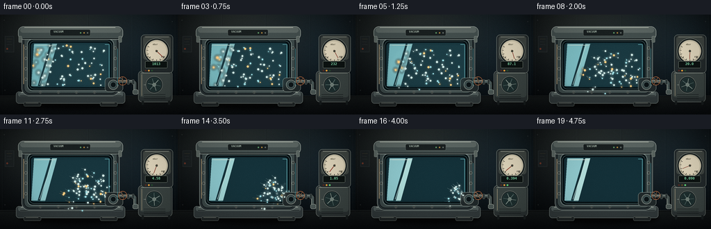
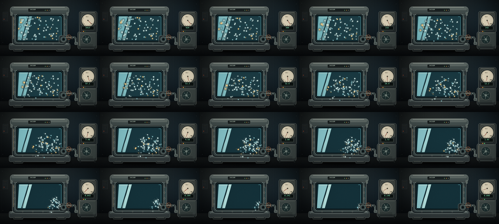

CODING AGENTS AS PIXEL WORLD MODELS
traex/DeepSeek-V4.1-Flash · mechanics_0028
点击播放 · 原生 RGB 像素
逐轮保存的候选
回放视频、检查图与代码变化。
每份候选均可单独播放。实际图片检查记录在下方工具轨迹中。
候选 01播放与检查图
点击播放 · 原生 RGB 像素

展开代码变化
--- 上一保存版本
+++ 本次保存版本
@@ -0,0 +1,471 @@
+from __future__ import annotations
+
+import math
+from pathlib import Path
+
+import numpy as np
+from PIL import Image, ImageDraw, ImageFilter, ImageFont
+
+import artifact_io
+
+
+ROOT = Path(__file__).resolve().parent
+W, H = 256, 144
+N, FPS = 20, 4.0
+S = 4
+FONT_PATH = "/usr/share/fonts/truetype/dejavu/DejaVuSansMono-Bold.ttf"
+
+
+def font(size: int) -> ImageFont.FreeTypeFont:
+ return ImageFont.truetype(FONT_PATH, size * S)
+
+
+def sc(v: float) -> int:
+ return int(round(v * S))
+
+
+def box(coords):
+ return tuple(sc(v) for v in coords)
+
+
+def rounded(draw: ImageDraw.ImageDraw, coords, radius, fill=None, outline=None, width=1):
+ draw.rounded_rectangle(box(coords), radius=sc(radius), fill=fill, outline=outline, width=sc(width))
+
+
+def line(draw: ImageDraw.ImageDraw, points, fill, width=1, joint="curve"):
+ draw.line([(sc(x), sc(y)) for x, y in points], fill=fill, width=max(1, sc(width)), joint=joint)
+
+
+def ellipse(draw: ImageDraw.ImageDraw, coords, fill=None, outline=None, width=1):
+ draw.ellipse(box(coords), fill=fill, outline=outline, width=max(1, sc(width)))
+
+
+def polygon(draw: ImageDraw.ImageDraw, points, fill=None, outline=None, width=1):
+ draw.polygon([(sc(x), sc(y)) for x, y in points], fill=fill, outline=outline, width=max(1, sc(width)))
+
+
+def smoothstep(edge0: float, edge1: float, x: float) -> float:
+ if edge0 == edge1:
+ return float(x >= edge1)
+ t = np.clip((x - edge0) / (edge1 - edge0), 0.0, 1.0)
+ return float(t * t * (3.0 - 2.0 * t))
+
+
+def lerp(a, b, t):
+ return tuple(int(round(a[i] + (b[i] - a[i]) * t)) for i in range(3))
+
+
+def make_background() -> Image.Image:
+ y, x = np.mgrid[0:H, 0:W]
+ top = np.array([31, 43, 49], dtype=float)
+ bottom = np.array([10, 15, 19], dtype=float)
+ mix = np.clip(y / 118.0, 0, 1)[..., None]
+ bg = top * (1 - mix) + bottom * mix
+
+ key = np.exp(-(((x - 63) / 92.0) ** 2 + ((y - 7) / 77.0) ** 2))
+ bg += key[..., None] * np.array([18, 15, 9])
+ cool = np.exp(-(((x - 224) / 58.0) ** 2 + ((y - 61) / 78.0) ** 2))
+ bg += cool[..., None] * np.array([2, 9, 13])
+ vignette = np.clip(1.0 - 0.52 * (((x - W * 0.5) / (W * 0.61)) ** 2 + ((y - H * 0.48) / (H * 0.72)) ** 2), 0.38, 1.0)
+ bg *= vignette[..., None]
+
+ floor = y >= 117
+ fy = np.clip((y - 117) / 27.0, 0, 1)
+ floor_col = np.array([19, 23, 24])[None, None, :] * (1 - fy[..., None]) + np.array([7, 10, 12])[None, None, :] * fy[..., None]
+ bg = np.where(floor[..., None], floor_col, bg)
+
+ image = Image.fromarray(np.clip(bg, 0, 255).astype(np.uint8))
+ image = image.resize((W * S, H * S), Image.Resampling.BICUBIC)
+ draw = ImageDraw.Draw(image, "RGBA")
+
+ # Quiet laboratory wall panels and a shallow floor seam.
+ for px in (3, 63, 126, 190, 252):
+ line(draw, [(px, 0), (px, 116)], (111, 137, 140, 20), 0.55)
+ line(draw, [(px + 0.8, 0), (px + 0.8, 116)], (4, 8, 10, 60), 0.55)
+ line(draw, [(0, 117), (255, 117)], (126, 143, 139, 28), 0.65)
+ line(draw, [(0, 118), (255, 118)], (0, 0, 0, 105), 1.0)
+
+ # A few subdued room details keep the chamber as the focal object.
+ draw.rectangle(box((7, 31, 20, 54)), fill=(28, 34, 36, 190), outline=(83, 94, 92, 75), width=sc(0.45))
+ line(draw, [(9.5, 35), (17.5, 35)], (127, 107, 64, 80), 0.55)
+ line(draw, [(9.5, 39), (16, 39)], (104, 119, 118, 48), 0.45)
+ line(draw, [(9.5, 43), (17, 43)], (104, 119, 118, 48), 0.45)
+ draw.ellipse(box((9, 48, 11.5, 50.5)), fill=(179, 73, 44, 130))
+
+ # Fine panel fasteners and floor speckle.
+ for px, py in ((6, 8), (248, 10), (7, 109), (246, 110)):
+ ellipse(draw, (px - 0.8, py - 0.8, px + 0.8, py + 0.8), fill=(113, 127, 123, 55))
+ rng = np.random.default_rng(28)
+ for _ in range(150):
+ px = float(rng.uniform(0, W))
+ py = float(rng.uniform(119, H))
+ a = int(rng.integers(8, 30))
+ draw.point((sc(px), sc(py)), fill=(149, 154, 139, a))
+
+ return image
+
+
+def add_static_scene(image: Image.Image) -> Image.Image:
+ image = image.convert("RGBA")
+ draw = ImageDraw.Draw(image, "RGBA")
+
+ # Contact shadow and steel pedestal.
+ shadow = Image.new("RGBA", image.size, (0, 0, 0, 0))
+ sd = ImageDraw.Draw(shadow, "RGBA")
+ ellipse(sd, (28, 120, 181, 137), fill=(0, 0, 0, 185))
+ shadow = shadow.filter(ImageFilter.GaussianBlur(sc(3.0)))
+ image.alpha_composite(shadow)
+ draw = ImageDraw.Draw(image, "RGBA")
+
+ rounded(draw, (23, 111, 180, 128), 4.2, fill=(48, 57, 59, 255), outline=(126, 140, 137, 180), width=0.55)
+ rounded(draw, (26, 111, 177, 118), 3.0, fill=(78, 91, 91, 255))
+ line(draw, [(30, 112.5), (173, 112.5)], (181, 194, 185, 105), 0.75)
+ line(draw, [(29, 117), (175, 117)], (16, 22, 24, 170), 0.85)
+ for fx in (34, 144):
+ rounded(draw, (fx, 126, fx + 25, 132), 2.0, fill=(30, 36, 37, 255), outline=(94, 106, 102, 125), width=0.45)
+ line(draw, [(fx + 3, 127.3), (fx + 21, 127.3)], (150, 161, 153, 48), 0.45)
+
+ # Cylindrical chamber body, outer gasket, and front glass.
+ rounded(draw, (31, 25, 172, 117), 11, fill=(40, 50, 53, 255), outline=(134, 148, 144, 155), width=0.75)
+ rounded(draw, (34, 29, 169, 114), 9, fill=(58, 72, 73, 255), outline=(16, 23, 26, 220), width=1.1)
+ rounded(draw, (39, 35, 164, 110), 8, fill=(7, 22, 27, 255), outline=(119, 137, 135, 190), width=1.0)
+ rounded(draw, (43, 39, 160, 106), 6.5, fill=(10, 31, 37, 255), outline=(2, 9, 12, 255), width=1.7)
+
+ # Glass color and internal reflections.
+ glass = Image.new("RGBA", image.size, (0, 0, 0, 0))
+ gd = ImageDraw.Draw(glass, "RGBA")
+ gd.rounded_rectangle(box((44, 40, 159, 105)), radius=sc(5.5), fill=(38, 88, 101, 78))
+ image.alpha_composite(glass)
+ draw = ImageDraw.Draw(image, "RGBA")
+
+ polygon(draw, [(49, 42), (72, 42), (54, 103), (45, 103)], fill=(142, 203, 211, 18))
+ polygon(draw, [(75, 42), (82, 42), (65, 103), (58, 103)], fill=(176, 225, 226, 13))
+ line(draw, [(49, 44), (76, 44), (57, 101)], (194, 229, 226, 56), 0.7)
+ line(draw, [(53, 44), (80, 44)], (227, 238, 224, 92), 0.55)
+ line(draw, [(151, 43), (157, 43), (157, 99)], (105, 183, 191, 55), 0.65)
+ line(draw, [(47, 98), (47, 102), (64, 104)], (111, 184, 187, 38), 0.55)
+
+ # Glass seal and evenly spaced captive bolts.
+ rounded(draw, (40.5, 36.5, 162.5, 108.5), 8, outline=(8, 14, 16, 255), width=1.0)
+ rounded(draw, (41.7, 37.7, 161.3, 107.3), 7.3, outline=(97, 127, 128, 130), width=0.45)
+ for py in (48, 63, 78, 93):
+ for px in (37.0, 166.0):
+ ellipse(draw, (px - 2.0, py - 2.0, px + 2.0, py + 2.0), fill=(34, 42, 43, 255), outline=(157, 169, 161, 155), width=0.4)
+ ellipse(draw, (px - 0.8, py - 0.8, px + 0.8, py + 0.8), fill=(93, 105, 102, 255))
+ line(draw, [(px - 0.9, py), (px + 0.9, py)], (27, 34, 35, 190), 0.3)
+ for px in (58, 84, 110, 136):
+ for py in (33.0, 112.0):
+ ellipse(draw, (px - 1.7, py - 1.7, px + 1.7, py + 1.7), fill=(35, 43, 44, 255), outline=(157, 169, 161, 130), width=0.35)
+ ellipse(draw, (px - 0.65, py - 0.65, px + 0.65, py + 0.65), fill=(105, 116, 111, 255))
+
+ # Heavy top lid with clamps and a tiny identification plate.
+ rounded(draw, (26, 17, 177, 36), 7.5, fill=(66, 79, 79, 255), outline=(155, 169, 164, 180), width=0.75)
+ rounded(draw, (29, 18, 174, 26), 5.0, fill=(91, 104, 102, 255))
+ line(draw, [(35, 18.5), (166, 18.5)], (196, 206, 195, 95), 0.7)
+ line(draw, [(33, 34.5), (170, 34.5)], (12, 18, 20, 205), 0.9)
+ rounded(draw, (72, 21.5, 130, 30.5), 2.0, fill=(25, 32, 33, 255), outline=(131, 146, 140, 85), width=0.35)
+ plate_font = font(4)
+ draw.text((sc(77), sc(22.2)), "VACUUM", font=plate_font, fill=(161, 181, 170, 160))
+ for px, col in ((116, (95, 158, 107, 210)), (121, (173, 135, 64, 155)), (126, (100, 113, 109, 180))):
+ ellipse(draw, (px - 1.0, 25.3, px + 1.0, 27.3), fill=col)
+ for cx in (29, 173):
+ rounded(draw, (cx - 2.2, 31, cx + 2.2, 40), 1.2, fill=(90, 103, 100, 255), outline=(167, 179, 171, 115), width=0.35)
+
+ # Extraction flange and pipe.
+ rounded(draw, (151, 91, 177, 111), 5, fill=(31, 40, 42, 255), outline=(144, 158, 152, 150), width=0.55)
+ ellipse(draw, (156, 94, 170, 108), fill=(55, 70, 71, 255), outline=(179, 190, 180, 120), width=0.45)
+ ellipse(draw, (159, 97, 167, 105), fill=(12, 20, 23, 255), outline=(98, 126, 127, 125), width=0.4)
+ line(draw, [(169, 97), (191, 97), (195, 99), (195, 112)], (12, 17, 19, 255), 7.2)
+ line(draw, [(170, 96), (191, 96), (194, 98), (194, 112)], (69, 82, 82, 255), 4.4)
+ line(draw, [(171, 95.3), (190, 95.3), (192.8, 97.1), (192.8, 109)], (150, 164, 157, 100), 0.65)
+ for px in (183, 190):
+ rounded(draw, (px, 93.5, px + 3.2, 100.5), 1.2, fill=(43, 53, 54, 255), outline=(145, 158, 151, 100), width=0.35)
+ rounded(draw, (191, 108, 199, 115), 2.5, fill=(75, 88, 87, 255), outline=(159, 171, 163, 105), width=0.4)
+
+ # Right-hand pump console and instrument housing.
+ rounded(draw, (199, 81, 248, 126), 5.5, fill=(43, 51, 52, 255), outline=(133, 146, 140, 140), width=0.55)
+ rounded(draw, (201, 83, 246, 119), 4.0, fill=(59, 70, 69, 255))
+ line(draw, [(203, 84), (244, 84)], (174, 184, 172, 105), 0.55)
+ for vy in (115, 118, 121):
+ line(draw, [(207, vy), (238, vy)], (14, 20, 21, 130), 0.55)
+ for px in (204, 242):
+ rounded(draw, (px, 124, px + 3, 130), 1.0, fill=(23, 29, 30, 255))
+
+ rounded(draw, (203, 29, 249, 84), 5.0, fill=(35, 43, 45, 255), outline=(141, 154, 147, 160), width=0.6)
+ rounded(draw, (206, 31, 246, 65), 4.0, fill=(63, 71, 68, 255))
+ line(draw, [(209, 32), (243, 32)], (183, 191, 178, 90), 0.5)
+
+ # Gauge bezel and luminous ivory face.
+ ellipse(draw, (207, 34, 244, 71), fill=(21, 27, 28, 255), outline=(155, 168, 160, 160), width=0.55)
+ ellipse(draw, (209, 36, 242, 69), fill=(220, 215, 190, 255), outline=(83, 91, 85, 255), width=0.75)
+ ellipse(draw, (211, 38, 240, 67), fill=(227, 222, 198, 255), outline=(133, 134, 112, 120), width=0.35)
+
+ # Calibration arc and ticks.
+ for i in range(29):
+ angle = math.radians(43 + i * (165 / 28))
+ r1 = 13.4 if i % 4 else 12.2
+ r2 = 14.7
+ cx, cy = 225.5, 52.5
+ col = (65, 65, 55, 210) if i % 4 else (34, 34, 29, 255)
+ line(draw, [(cx + r1 * math.cos(angle), cy + r1 * math.sin(angle)), (cx + r2 * math.cos(angle), cy + r2 * math.sin(angle))], col, 0.36 if i % 4 else 0.65)
+ arc_font = font(3)
+ draw.text((sc(212), sc(59)), "0", font=arc_font, fill=(70, 69, 57, 220))
+ draw.text((sc(232), sc(59)), "ATM", font=arc_font, fill=(70, 69, 57, 220))
+ draw.text((sc(220), sc(41)), "mbar", font=arc_font, fill=(93, 91, 73, 200))
+
+ # Digital readout and pump status lamps.
+ rounded(draw, (209, 67, 241, 77), 1.6, fill=(12, 19, 18, 255), outline=(124, 139, 129, 100), width=0.4)
+ for lx, base_col in ((208.5, (83, 44, 37)), (213.0, (93, 75, 39)), (217.5, (38, 77, 49))):
+ ellipse(draw, (lx, 79.4, lx + 2.4, 81.8), fill=(*base_col, 255), outline=(156, 167, 153, 65), width=0.25)
+
+ # Subtle warm rim light and cool edge light.
+ line(draw, [(34, 43), (34, 100)], (215, 190, 144, 44), 0.65)
+ line(draw, [(169, 49), (169, 102)], (89, 183, 194, 45), 0.6)
+ line(draw, [(204, 86), (204, 117)], (204, 189, 153, 35), 0.55)
+
+ return image
+
+
+def make_glass_mask() -> Image.Image:
+ mask = Image.new("L", (W * S, H * S), 0)
+ md = ImageDraw.Draw(mask)
+ md.rounded_rectangle(box((44, 40, 159, 105)), radius=sc(5.5), fill=255)
+ return mask
+
+
+def pressure_at(t: float) -> float:
+ # A fast, plausible rough-vacuum pull from atmosphere to a few microns.
+ return 1013.25 * (10.0 ** (-4.05 * t))
+
+
+def pressure_text(pressure: float) -> str:
+ if pressure >= 100:
+ return f"{pressure:.0f}"
+ if pressure >= 10:
+ return f"{pressure:.1f}"
+ if pressure >= 1:
+ return f"{pressure:.2f}"
+ if pressure >= 0.01:
+ return f"{pressure:.3f}"
+ exponent = int(math.floor(math.log10(max(pressure, 1e-8))))
+ mantissa = pressure / (10**exponent)
+ return f"{mantissa:.1f}e{exponent:+d}"
+
+
+def path_point(points, u):
+ lengths = []
+ total = 0.0
+ for a, b in zip(points[:-1], points[1:]):
+ length = math.hypot(b[0] - a[0], b[1] - a[1])
+ lengths.append(length)
+ total += length
+ target = float(np.clip(u, 0, 1)) * total
+ for (a, b), length in zip(zip(points[:-1], points[1:]), lengths):
+ if target <= length:
+ q = target / max(length, 1e-6)
+ return a[0] + (b[0] - a[0]) * q, a[1] + (b[1] - a[1]) * q
+ target -= length
+ return points[-1]
+
+
+def draw_particles(image: Image.Image, t: float, q: float, frame_index: int):
+ rng = np.random.default_rng(9107)
+ particles = []
+ port = (157.0, 101.0)
+ for i in range(62):
+ # Seed positions inside the glass, biased away from the frame.
+ x0 = rng.uniform(48.0, 156.0)
+ y0 = rng.uniform(44.0, 102.0)
+ dx, dy = x0 - port[0], y0 - port[1]
+ r0 = max(4.0, math.hypot(dx, dy))
+ theta0 = math.atan2(dy, dx)
+ life = rng.uniform(0.68, 1.02)
+ speed = rng.uniform(0.82, 1.18)
+ spin = rng.uniform(-1.25, 1.25)
+ size = rng.uniform(0.55, 1.35)
+ particles.append((r0, theta0, life, speed, spin, size, i))
+
+ glow = Image.new("RGBA", image.size, (0, 0, 0, 0))
+ gd = ImageDraw.Draw(glow, "RGBA")
+ core = Image.new("RGBA", image.size, (0, 0, 0, 0))
+ cd = ImageDraw.Draw(core, "RGBA")
+
+ for r0, theta0, life, speed, spin, size, i in particles:
+ fade = 1.0 - smoothstep(life - 0.075, life, t)
+ if fade <= 0:
+ continue
+ # Accelerating inward spiral, strongest near the extraction port.
+ pull = t ** (1.55 * speed)
+ radius = r0 * (1.0 - pull) ** (0.64 + 0.45 * speed) + 0.8
+ angle = theta0 + spin * pull * (0.8 + 9.0 / (r0 + 14.0))
+ x = port[0] + radius * math.cos(angle)
+ y = port[1] + radius * math.sin(angle)
+
+ prev_pull = max(0.0, t - 0.045) ** (1.55 * speed)
+ prev_radius = r0 * (1.0 - prev_pull) ** (0.64 + 0.45 * speed) + 0.8
+ prev_angle = theta0 + spin * prev_pull * (0.8 + 9.0 / (r0 + 14.0))
+ px = port[0] + prev_radius * math.cos(prev_angle)
+ py = port[1] + prev_radius * math.sin(prev_angle)
+
+ brightness = int(np.clip(255 * fade, 0, 255))
+ if i % 7 == 0:
+ color = (255, 208, 133, brightness)
+ elif i % 4 == 0:
+ color = (156, 225, 235, brightness)
+ else:
+ color = (206, 236, 235, brightness)
+ line(cd, [(px, py), (x, y)], (color[0], color[1], color[2], int(brightness * 0.26)), 0.45)
+ rr = size
+ ellipse(gd, (x - rr - 1.7, y - rr - 1.7, x + rr + 1.7, y + rr + 1.7), fill=(*color[:3], int(brightness * 0.18)))
+ ellipse(cd, (x - rr, y - rr, x + rr, y + rr), fill=color)
+ if size > 1.0:
+ cd.point((sc(x), sc(y)), fill=(255, 255, 245, brightness))
+
+ glow = glow.filter(ImageFilter.GaussianBlur(sc(1.4)))
+ image.alpha_composite(glow)
+ image.alpha_composite(core)
+
+
+def draw_flow(image: Image.Image, t: float, q: float):
+ if t >= 0.92:
+ return
+ points = [(170.0, 97.0), (191.0, 97.0), (195.0, 99.0), (195.0, 112.0)]
+ overlay = Image.new("RGBA", image.size, (0, 0, 0, 0))
+ od = ImageDraw.Draw(overlay, "RGBA")
+ strength = (1.0 - smoothstep(0.68, 0.95, t)) * (0.35 + 0.65 * math.sin(math.pi * min(1.0, t * 1.3)))
+ for k in range(7):
+ u = (t * 1.28 + k / 7.0) % 1.0
+ x, y = path_point(points, u)
+ alpha = int(150 * strength * (0.5 + 0.5 * math.sin(math.pi * u)))
+ ellipse(od, (x - 0.75, y - 0.75, x + 0.75, y + 0.75), fill=(126, 221, 226, alpha))
+ ellipse(od, (x - 1.6, y - 1.6, x + 1.6, y + 1.6), fill=(92, 198, 207, int(alpha * 0.16)))
+ overlay = overlay.filter(ImageFilter.GaussianBlur(sc(0.55)))
+ image.alpha_composite(overlay)
+
+
+def draw_dynamic_instruments(image: Image.Image, t: float, pressure: float, q: float, frame_index: int):
+ draw = ImageDraw.Draw(image, "RGBA")
+ cx, cy = 225.5, 52.5
+
+ # Pressure needle with a tiny, decaying pump vibration.
+ jitter = math.sin(frame_index * 2.31 + 0.7) * (1.5 * (1.0 - q))
+ angle = math.radians(43.0 + 165.0 * q + jitter)
+ nx = cx + 11.4 * math.cos(angle)
+ ny = cy + 11.4 * math.sin(angle)
+ line(draw, [(cx - 2.1 * math.cos(angle), cy - 2.1 * math.sin(angle)), (nx, ny)], (154, 53, 36, 235), 0.72)
+ line(draw, [(cx, cy), (nx, ny)], (72, 31, 24, 220), 0.34)
+ ellipse(draw, (cx - 1.8, cy - 1.8, cx + 1.8, cy + 1.8), fill=(70, 71, 60, 255), outline=(214, 209, 183, 190), width=0.3)
+
+ # Digital pressure readout.
+ readout_font = font(5)
+ label = pressure_text(pressure)
+ text_box = draw.textbbox((0, 0), label, font=readout_font)
+ tw = text_box[2] - text_box[0]
+ tx = sc(225.0) - tw / 2
+ draw.text((tx, sc(68.0)), label, font=readout_font, fill=(133, 231, 183, 235))
+
+ # State lamps: amber while pumping, green once the chamber is evacuated.
+ active_amber = t < 0.86
+ active_green = t >= 0.72
+ for lx, active, colors in (
+ (208.5, False, ((83, 44, 37), (214, 77, 51))),
+ (213.0, active_amber, ((93, 75, 39), (238, 166, 60))),
+ (217.5, active_green, ((38, 77, 49), (98, 225, 128))),
+ ):
+ color = colors[1] if active else colors[0]
+ ellipse(draw, (lx, 79.4, lx + 2.4, 81.8), fill=(*color, 255))
+
+ # Rotating pump flywheel. Trailing spokes create a little motion blur.
+ pcx, pcy = 222.0, 101.0
+ ellipse(draw, (pcx - 12.0, pcy - 12.0, pcx + 12.0, pcy + 12.0), fill=(18, 26, 28, 255), outline=(142, 155, 148, 130), width=0.55)
+ ellipse(draw, (pcx - 10.2, pcy - 10.2, pcx + 10.2, pcy + 10.2), fill=(30, 48, 49, 255), outline=(80, 113, 113, 140), width=0.35)
+ wheel_angle = math.radians(frame_index * 56.0 + 12.0)
+ for k in range(6):
+ a = wheel_angle + k * math.pi / 3
+ r1, r2 = 2.2, 9.0
+ col = (151, 169, 162, 145) if k % 2 else (95, 119, 117, 150)
+ line(draw, [(pcx + r1 * math.cos(a), pcy + r1 * math.sin(a)), (pcx + r2 * math.cos(a), pcy + r2 * math.sin(a))], col, 0.65)
+ ellipse(draw, (pcx - 2.4, pcy - 2.4, pcx + 2.4, pcy + 2.4), fill=(114, 133, 128, 255), outline=(188, 199, 187, 100), width=0.3)
+ line(draw, [(207, 101), (210, 101)], (159, 174, 164, 45), 0.5)
+
+ # Rotating isolation valve handwheel.
+ vcx, vcy = 176.5, 95.5
+ va = math.radians(frame_index * 15.0)
+ ellipse(draw, (vcx - 6.2, vcy - 6.2, vcx + 6.2, vcy + 6.2), outline=(177, 104, 63, 200), width=0.8)
+ for k in range(4):
+ a = va + k * math.pi / 2
+ line(draw, [(vcx, vcy), (vcx + 5.8 * math.cos(a), vcy + 5.8 * math.sin(a))], (185, 119, 75, 205), 0.55)
+ ellipse(draw, (vcx - 1.5, vcy - 1.5, vcx + 1.5, vcy + 1.5), fill=(84, 74, 63, 255), outline=(193, 166, 126, 120), width=0.25)
+
+
+def draw_glass_atmosphere(image: Image.Image, t: float, mask: Image.Image):
+ overlay = Image.new("RGBA", image.size, (0, 0, 0, 0))
+ od = ImageDraw.Draw(overlay, "RGBA")
+ haze = int(25 * (1.0 - smoothstep(0.15, 0.95, t)))
+ od.rounded_rectangle(box((44, 40, 159, 105)), radius=sc(5.5), fill=(103, 177, 188, haze))
+
+ # A faint pressure front contracts toward the outlet during the pull.
+ if t < 0.88:
+ rx = 56.0 * (1.0 - t) + 10.0
+ ry = 31.0 * (1.0 - t) + 7.0
+ cx = 101.0 + (157.0 - 101.0) * (t**2.4)
+ cy = 72.0 + (101.0 - 72.0) * (t**2.0)
+ alpha = int(30 * (1.0 - t))
+ ellipse(od, (cx - rx, cy - ry, cx + rx, cy + ry), outline=(157, 220, 218, alpha), width=0.55)
+
+ overlay = overlay.filter(ImageFilter.GaussianBlur(sc(2.2)))
+ overlay.putalpha(Image.composite(overlay.getchannel("A"), Image.new("L", overlay.size, 0), mask))
+ image.alpha_composite(overlay)
+
+
+def add_finish(image: Image.Image, frame_index: int) -> Image.Image:
+ # A restrained warm/cool grade and deterministic sensor grain.
+ arr = np.asarray(image.convert("RGB"), dtype=np.float32) / 255.0
+ y, x = np.mgrid[0 : H * S, 0 : W * S]
+ vignette = 1.0 - 0.27 * (((x / (W * S) - 0.5) / 0.64) ** 2 + ((y / (H * S) - 0.48) / 0.72) ** 2)
+ arr *= np.clip(vignette, 0.63, 1.0)[..., None]
+ arr[..., 0] *= 1.025
+ arr[..., 2] *= 0.985
+ rng = np.random.default_rng(3200 + frame_index)
+ grain = rng.normal(0.0, 0.008, (H * S, W * S, 1)).astype(np.float32)
+ arr = np.clip(arr + grain, 0.0, 1.0)
+ return Image.fromarray((arr * 255.0 + 0.5).astype(np.uint8), "RGB")
+
+
+def render_frame(static_scene: Image.Image, glass_mask: Image.Image, frame_index: int) -> np.ndarray:
+ t = frame_index / (N - 1)
+ pressure = pressure_at(t)
+ # Normalized logarithmic gauge travel from atmospheric to high vacuum.
+ q = (math.log10(1013.25) - math.log10(max(pressure, 1e-6))) / 5.8
+ q = float(np.clip(q, 0.0, 1.0))
+
+ image = static_scene.copy().convert("RGBA")
+ draw_glass_atmosphere(image, t, glass_mask)
+ draw_particles(image, t, q, frame_index)
+ draw_flow(image, t, q)
+ draw_dynamic_instruments(image, t, pressure, q, frame_index)
+
+ # Pump and hose vibration is tiny enough to preserve the sealed vessel silhouette.
+ if t < 0.92:
+ amp = 0.16 * (1.0 - t)
+ shift = int(round(math.sin(frame_index * 2.4) * amp * S))
+ if shift:
+ shifted = image.crop((0, 0, image.width - abs(shift), image.height))
+ image.paste(shifted, (max(0, shift), 0))
+
+ image = add_finish(image, frame_index)
+ image = image.resize((W, H), Image.Resampling.LANCZOS)
+ return np.asarray(image.convert("RGB"), dtype=np.uint8)
+
+
+def main():
+ background = make_background()
+ static_scene = add_static_scene(background)
+ glass_mask = make_glass_mask()
+ frames = np.stack([render_frame(static_scene, glass_mask, i) for i in range(N)])
+ artifact_io.save(frames, ROOT)
+ print(f"saved {frames.shape} frames to {ROOT}")
+
+
+if __name__ == "__main__":
+ main()
候选 02播放与检查图
点击播放 · 原生 RGB 像素


展开代码变化
--- 上一保存版本
+++ 本次保存版本
@@ -272,7 +272,7 @@
rng = np.random.default_rng(9107)
particles = []
port = (157.0, 101.0)
- for i in range(62):
+ for i in range(78):
# Seed positions inside the glass, biased away from the frame.
x0 = rng.uniform(48.0, 156.0)
y0 = rng.uniform(44.0, 102.0)
@@ -282,7 +282,7 @@
life = rng.uniform(0.68, 1.02)
speed = rng.uniform(0.82, 1.18)
spin = rng.uniform(-1.25, 1.25)
- size = rng.uniform(0.55, 1.35)
+ size = rng.uniform(0.65, 1.55)
particles.append((r0, theta0, life, speed, spin, size, i))
glow = Image.new("RGBA", image.size, (0, 0, 0, 0))
@@ -314,9 +314,9 @@
color = (156, 225, 235, brightness)
else:
color = (206, 236, 235, brightness)
- line(cd, [(px, py), (x, y)], (color[0], color[1], color[2], int(brightness * 0.26)), 0.45)
+ line(cd, [(px, py), (x, y)], (color[0], color[1], color[2], int(brightness * 0.36)), 0.55)
rr = size
- ellipse(gd, (x - rr - 1.7, y - rr - 1.7, x + rr + 1.7, y + rr + 1.7), fill=(*color[:3], int(brightness * 0.18)))
+ ellipse(gd, (x - rr - 1.7, y - rr - 1.7, x + rr + 1.7, y + rr + 1.7), fill=(*color[:3], int(brightness * 0.25)))
ellipse(cd, (x - rr, y - rr, x + rr, y + rr), fill=color)
if size > 1.0:
cd.point((sc(x), sc(y)), fill=(255, 255, 245, brightness))
@@ -359,6 +359,8 @@
# Digital pressure readout.
readout_font = font(5)
label = pressure_text(pressure)
+ if len(label) > 7:
+ label = f"{pressure / 10**int(math.floor(math.log10(pressure))):.1f}e{int(math.floor(math.log10(pressure))):+d}"
text_box = draw.textbbox((0, 0), label, font=readout_font)
tw = text_box[2] - text_box[0]
tx = sc(225.0) - tw / 2
@@ -429,7 +431,7 @@
rng = np.random.default_rng(3200 + frame_index)
grain = rng.normal(0.0, 0.008, (H * S, W * S, 1)).astype(np.float32)
arr = np.clip(arr + grain, 0.0, 1.0)
- return Image.fromarray((arr * 255.0 + 0.5).astype(np.uint8), "RGB")
+ return Image.fromarray((arr * 255.0 + 0.5).astype(np.uint8))
def render_frame(static_scene: Image.Image, glass_mask: Image.Image, frame_index: int) -> np.ndarray:
可观测工具轨迹
实际执行的命令与返回图片。
命令 1exit 0
/bin/bash -c "pwd && rg --files -g '"'!*node_modules*'"' | sort | sed -n '1,200p'"
命令 2exit 0
/bin/bash -c 'cat prompt.txt'
命令 3exit 0
/bin/bash -c 'cat GENERATION_RULES.md'
命令 4exit 0
/bin/bash -c 'cat task_spec.json'
命令 5exit 0
/bin/bash -c "sed -n '1,240p' artifact_io.py"
命令 6exit 0
/bin/bash -c "sed -n '1,240p' player_template.html"
命令 7exit 0
/bin/bash -c "python - <<'PY' import importlib.util for m in ['numpy','PIL','imageio','cv2','scipy']: print(m, bool(importlib.util.find_spec(m))) PY"
命令 8exit 1
/bin/bash -c 'python generate.py'
命令 9exit 0
/bin/bash -c 'python -m py_compile generate.py'
命令 10exit 0
/bin/bash -c 'git status --short'
命令 11exit 1
/bin/bash -c 'python generate.py'
命令 12exit 0
/bin/bash -c "rg -n \"\\.(ellipse|line|rectangle|rounded_rectangle)\\(.*width=\" generate.py"
命令 13exit 0
/bin/bash -c 'python generate.py'
命令 14exit 0
/bin/bash -c "python - <<'PY'
from pathlib import Path
from PIL import Image
import numpy as np, json
root=Path('.')
frames=sorted((root/'frames').glob('*.png'))
arr=np.stack([np.asarray(Image.open(p).convert('RGB'),dtype=np.int16) for p in frames])
print('frames',len(frames),'shape',arr.shape,'dtype',arr.dtype)
print('mean RGB',np.round(arr.mean(axis=(0,1,2)),2))
print('global mean abs consecutive diff',round(float(np.abs(np.diff(arr,axis=0)).mean()),3))
print('first-last mean abs diff',round(float(np.abs(arr[0]-arr[-1]).mean()),3))
for p in ['pixels.npz','index.html','inspection.png','transition_check.png']:
q=root/p
print(p,q.exists(),q.stat().st_size if q.exists() else '-')
PY"命令 15exit 0
/bin/bash -c 'python generate.py'
命令 16exit 0
/bin/bash -c "python - <<'PY'
from pathlib import Path
from PIL import Image
import numpy as np, json
root=Path('.')
spec=json.loads((root/'task_spec.json').read_text())
with np.load(root/'pixels.npz') as z:
p=z['pixels']
print('npz',p.shape,p.dtype)
frames=np.stack([np.asarray(Image.open(root/'frames'/f'{i:02d}.png'),dtype=np.uint8) for i in range(spec['frames'])])
print('frames',frames.shape,frames.dtype)
print('all finite',np.isfinite(frames).all(),'range',int(frames.min()),int(frames.max()))
print('successive diff',round(float(np.abs(np.diff(frames.astype(np.int16),axis=0)).mean()),3))
print('start-end diff',round(float(np.abs(frames[0].astype(np.int16)-frames[-1].astype(np.int16)).mean()),3))
PY"命令 17exit 0
/bin/bash -c "python - <<'PY'
from pathlib import Path
from PIL import Image
import numpy as np, json
root=Path('.')
spec=json.loads((root/'task_spec.json').read_text())
frames=np.stack([np.asarray(Image.open(root/'frames'/f'{i:02d}.png').convert('RGB'),dtype=np.uint32) for i in range(spec['frames'])])
packed=(frames[:,:,:,0]<<16)|(frames[:,:,:,1]<<8)|frames[:,:,:,2]
with np.load(root/'pixels.npz') as z:
stored=z['pixels']
print('packed match',np.array_equal(packed.transpose(1,2,0),stored))
html=(root/'index.html').read_text()
print('html payload embedded', '__DATA__' not in html and 'window.__pixelReady' in html)
print('png count',len(list((root/'frames').glob('*.png'))))
PY"命令 18exit 0
/bin/bash -c "python - <<'PY'
from pathlib import Path
from PIL import Image, ImageChops, ImageStat
root=Path('.')
frames=[Image.open(root/'frames'/f'{i:02d}.png').convert('RGB') for i in range(20)]
# Glass-only change region excludes gauge and pump animation.
for a,b in [(0,1),(0,8),(8,14),(14,19)]:
d=ImageChops.difference(frames[a],frames[b]).crop((43,39,160,106))
print(a,b,'glass mean diff',round(sum(ImageStat.Stat(d).mean)/3,3))
PY"命令 19exit 0
/bin/bash -c "python - <<'PY'
from pathlib import Path
import hashlib
for p in sorted(Path('.').glob('*')):
if p.is_file():
print(p.name, p.stat().st_size)
PY"命令 20exit 0
/bin/bash -c "python - <<'PY'
from PIL import Image
from pathlib import Path
root=Path('.')
frames=[Image.open(root/'frames'/f'{i:02d}.png') for i in range(20)]
sheet=Image.new('RGB',(256*5,144*4),(18,22,26))
for i,im in enumerate(frames):
sheet.paste(im,((i%5)*256,(i//5)*144))
sheet.save('inspection_full.png')
PY"视觉工具实际返回图片 1

视觉工具实际返回图片 2

视觉工具实际返回图片 3

视觉工具实际返回图片 4

视觉工具实际返回图片 5

视觉工具实际返回图片 6

视觉工具实际返回图片 7

保存候选 2 份；完成命令 20 次；可验证图片返回 7 张。原始 API 响应与完整日志保留在本地。